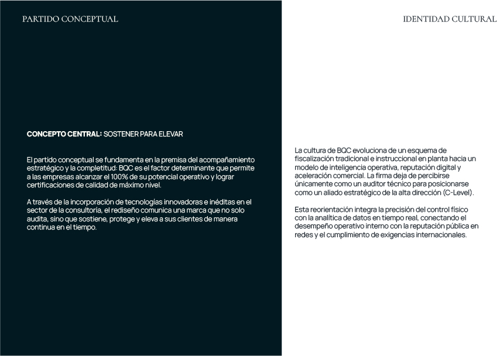
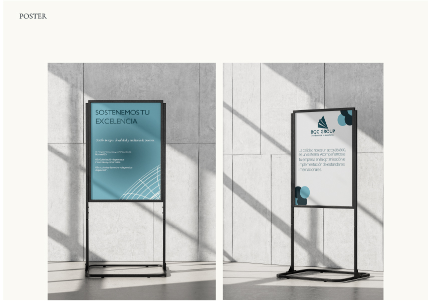

BQC GROUP — Rebranding
Branding / Manual de marca
Rediseño integral de la identidad de una consultora de calidad y auditoría de procesos. Bajo el concepto "Sostener para elevar", la marca evoluciona de un perfil técnico de control a un aliado estratégico para la alta dirección.
El manual define el partido conceptual, una paleta cromática inspirada en el entorno del laboratorio, un sistema de marca responsive y sus aplicaciones en piezas gráficas y redes sociales.




